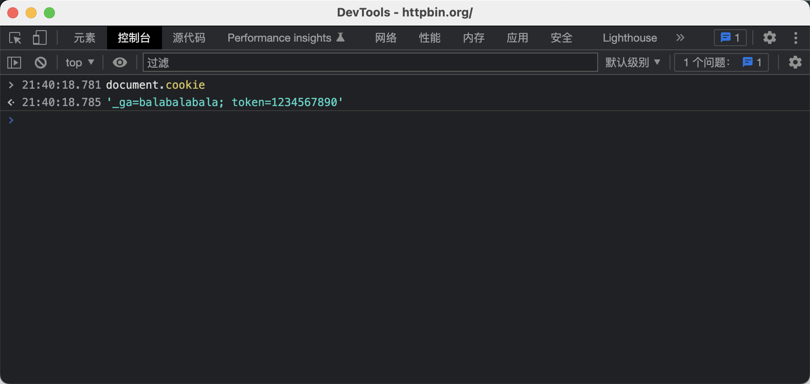

如何在 Chrome 浏览器的Dev Tools - Console 中设置cookie
发布于 2022-12-06
公司项目一般都有区分开发环境，测试环境，预发环境和生产环境。
通常预发环境连接的也是生产的数据库。
也就是说预发环境和生产环境的用户 token 是相同的。
如果你正在登录着生产环境，突然想登录预发环境，这个时候其实完全可以将生产环境的 token 复制到预发环境，
这样可以免去重新登录的麻烦（需要短信验证码）。
我们的前端项目，用户 token 是存储在 cookie 中的。
方案有两种，最简单的就是在开发者工具中点点点，装逼一点就是在开发者工具的 console 中用命令设置。
方案一没太多好说的，就是在当前登录的环境（生产环境）打开 开发者工具 > 应用 > 存储 > Cookie 中找到 token 的值，复制一下。
然后到需要登录的环境（预发环境）同样打开 开发者工具 > 应用 > 存储 > Cookie 中新增一个名为 token 的 cookie，把值粘贴进去即可。
方案二是查看 cookie 和设置 cookie 都在 console 中完成。
查看
cookiedocument.cookie
 设置
cookiedocument.cookie='_ga=balabalabala; token=1234567890'
设置好之后再用 document.cookie 查看，“哎呀卧草，怎么没 token 还是没有”…
一番冲浪之后发现在 chrome console 中通过 document.cookie 来设置 cookie 的话，只能一个一个的设置。
根据表象，其实是只有 ; 分号前的第一个键值会生效。所以只能一个个的来设置。
document.cookie='_ga=balabalabala' document.cookie='token=123456789'
如果不想一个一个的设置，也有小伙伴提供了一个简单的方法封装。
function clearCookies(){ var cookies = document.cookie.split(';'); for(i in cookies){ var vals = cookies[i].split('='); var name = vals.shift(0, 1).trim(); document.cookie = name+'='; } } function parseCookies(cookie){ clearCookies(); var cookies = cookie.split(';'); for(i in cookies){ var vals = cookies[i].split('='); var name = vals.shift(0, 1).trim(); document.cookie = name+'='+vals.join('='); } }
之后就可以调用 parseCookies('_ga=balabalabala; token=1234567890') 来实现一次设置多个 cookie 。